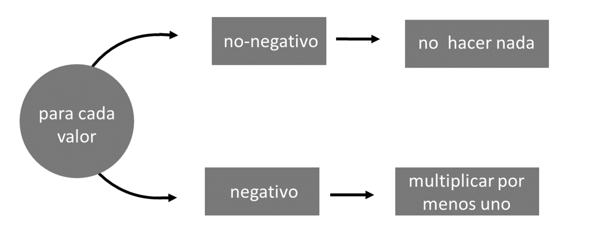
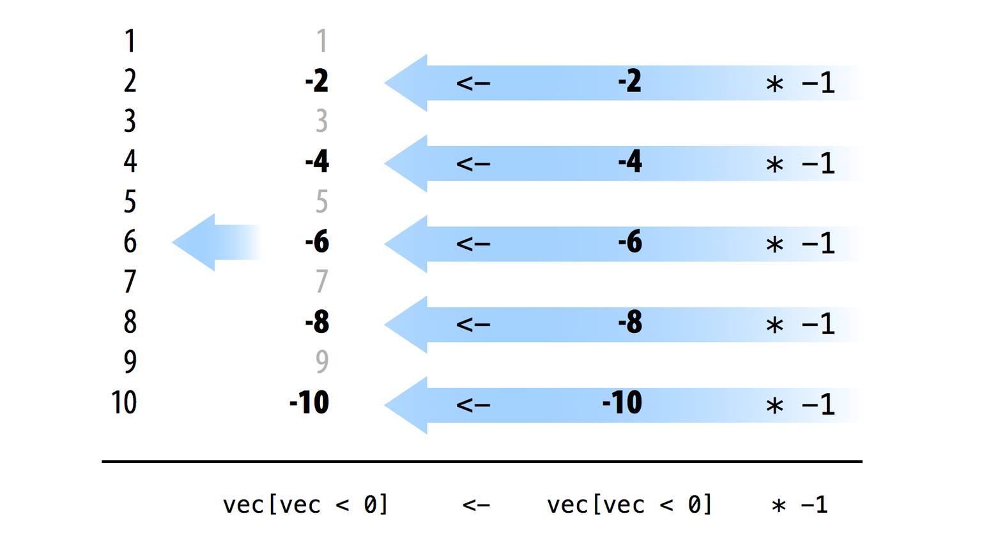
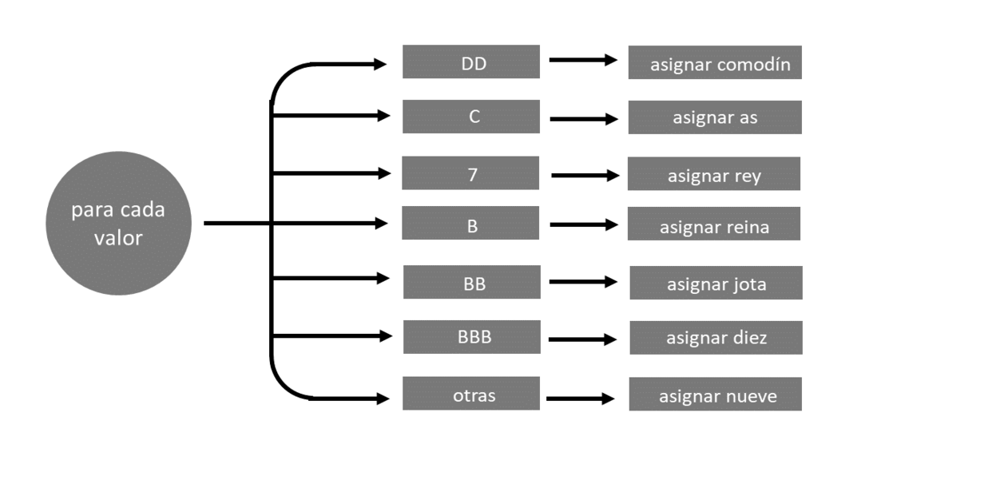
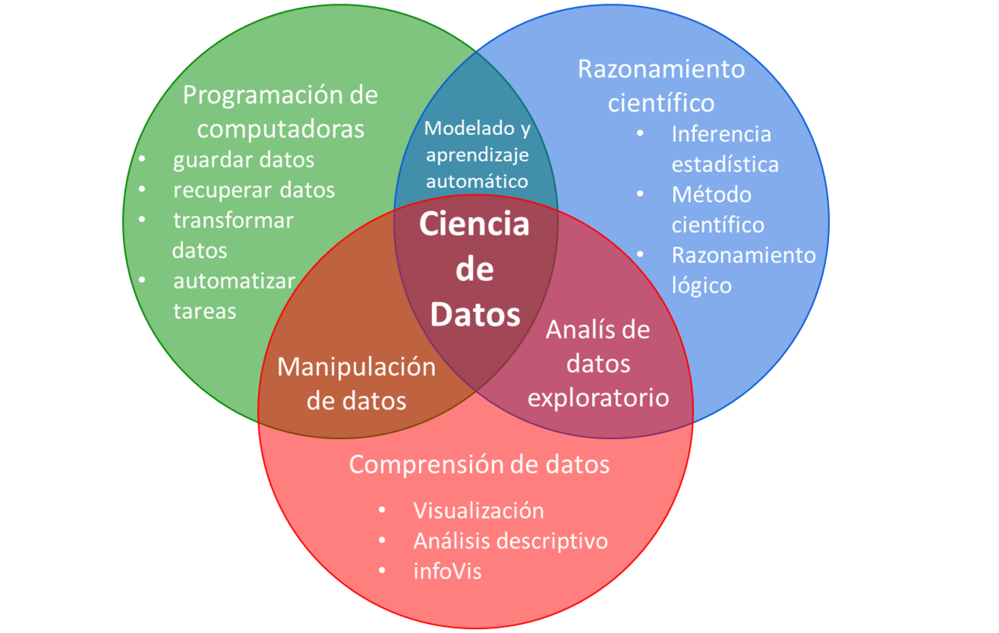

10 Velocidad
Como científico de datos, necesita velocidad. Puede trabajar con datos más grandes y realizar tareas más ambiciosas cuando su código se ejecuta rápidamente. Este capítulo le mostrará una forma específica de escribir código rápido en R. Luego usará el método para simular 10 millones de juegos de su máquina tragamonedas.
10.1 Código Vectorizado
Puede escribir una pieza de código de muchas maneras diferentes, pero el código R más rápido generalmente aprovechará tres cosas: pruebas lógicas, creación de subconjuntos y ejecución de elementos. Estas son las cosas que R hace mejor. El código que usa estas cosas suele tener una cierta cualidad: está vectorizado; el código puede tomar un vector de valores como entrada y manipular cada valor en el vector al mismo tiempo.
Para ver cómo se ve el código vectorizado, compare estos dos ejemplos de una función de valor absoluto. Cada uno toma un vector de números y lo transforma en un vector de valores absolutos (por ejemplo, números positivos). El primer ejemplo no está vectorizado; abs_bucle usa un bucle for para manipular cada elemento del vector uno a la vez:
abs_bucle <- function(vec){
for (i in 1:length(vec)) {
if (vec[i] < 0) {
vec[i] <- -vec[i]
}
}
vec
}El segundo ejemplo, abs_set, es una versión vectorizada de abs_bucle. Utiliza subconjuntos lógicos para manipular todos los números negativos en el vector al mismo tiempo:
abs_sets <- function(vec){
negs <- vec < 0
vec[negs] <- vec[negs] * -1
vec
}abs_set es mucho más rápido que abs_bucle porque se basa en operaciones que R realiza rápidamente: pruebas lógicas, creación de subconjuntos y ejecución de elementos.
Puedes usar la función system.time para ver qué tan rápido es abs_set. system.time toma una expresión R, la ejecuta y luego muestra cuánto tiempo transcurrió mientras se ejecutaba la expresión.
Para comparar abs_bucle y abs_set, primero haga un vector largo de números positivos y negativos. largo contendrá 10 millones de valores:
rep repite un valor, o vector de valores, muchas veces. Para usar rep, dale un vector de valores y luego el número de veces para repetir el vector. R devolverá los resultados como un nuevo vector más largo.
Luego puede usar system.time para medir cuánto tiempo le toma a cada función evaluar largo:
system.time(abs_bucle(largo))
## user system elapsed
## 15.982 0.032 16.018
system.time(abs_sets(largo))
## user system elapsed
## 0.529 0.063 0.592No confunda system.time con Sys.time, que devuelve la hora actual.
Las primeras dos columnas de la salida de system.time informan cuántos segundos pasó su computadora ejecutando la llamada en el lado del usuario y en el lado del sistema de su proceso, una dicotomía que variará de un sistema operativo a otro.
La última columna muestra cuántos segundos transcurrieron mientras R ejecutaba la expresión. Los resultados muestran que abs_set calculó el valor absoluto 30 veces más rápido que abs_bucle cuando se aplicó a un vector de 10 millones de números. Puede esperar aceleraciones similares siempre que escriba código vectorizado.
Ejercicio 13.1 (¿Qué tan rápido es abs?) Muchas funciones de R preexistentes ya están vectorizadas y se han optimizado para funcionar rápidamente. Puede hacer que su código sea más rápido confiando en estas funciones siempre que sea posible. Por ejemplo, R viene con una función de valor absoluto incorporada, abs.
Comprueba cuánto más rápido abs calcula el valor absoluto de long que abs_bucle y abs_set.
Solución. Puedes medir la velocidad de abs con system.time. A abs le toma 0,05 segundos, a la velocidad del rayo, calcular el valor absoluto de 10 millones de números. Esto es 0,592 / 0,054 = 10,96 veces más rápido que abs_set y casi 300 veces más rápido que abs_bucle:
system.time(abs(largo))
## user system elapsed
## 0.037 0.018 0.05410.2 Cómo Escribir Código Vectorizado
El código vectorizado es fácil de escribir en R porque la mayoría de las funciones de R ya están vectorizadas. El código basado en estas funciones se puede vectorizar fácilmente y, por lo tanto, es rápido. Para crear código vectorizado:
- Use funciones vectorizadas para completar los pasos secuenciales en su programa.
- Use subconjuntos lógicos para manejar casos paralelos. Trate de manipular todos los elementos en un caso a la vez.
abs_bucle y abs_set ilustran estas reglas. Las funciones manejan dos casos y realizan un paso secuencial, Figure Figura 10.1. Si un número es positivo, las funciones lo dejan solo. Si un número es negativo, las funciones lo multiplican por uno negativo.
Puede identificar todos los elementos de un vector que caen en un caso con una prueba lógica. R ejecutará la prueba en forma de elementos y devolverá un TRUE para cada elemento que pertenezca al caso. Por ejemplo, vec < 0 identifica cada valor de vec que pertenece al caso negativo. Puede usar la misma prueba lógica para extraer el conjunto de valores negativos con subconjunto lógico:
vec <- c(1, -2, 3, -4, 5, -6, 7, -8, 9, -10)
vec < 0
## FALSE TRUE FALSE TRUE FALSE TRUE FALSE TRUE FALSE TRUE
vec[vec < 0]
## -2 -4 -6 -8 -10El plan de la Figura Figura 10.1 ahora requiere un paso secuencial: debe multiplicar cada uno de los valores negativos por uno negativo. Todos los operadores aritméticos de R están vectorizados, por lo que puede usar * para completar este paso de forma vectorizada. * multiplicará cada número en vec[vec < 0] por uno negativo al mismo tiempo:
vec[vec < 0] * -1
## 2 4 6 8 10Finalmente, puede usar el operador de asignación de R, que también está vectorizado, para guardar el nuevo conjunto sobre el antiguo en el objeto vec original. Dado que <- está vectorizado, los elementos del nuevo conjunto se emparejarán con los elementos del antiguo conjunto, en orden, y luego se realizará la asignación por elementos. Como resultado, cada valor negativo será reemplazado por su pareja positiva, como en la figura Figura 10.2.

Ejercicio 13.2 (Vectorizar una función) La siguiente función convierte un vector de símbolos de tragamonedas en un vector de nuevos símbolos de tragamonedas. ¿Puedes vectorizarlo? ¿Cuánto más rápido funciona la versión vectorizada?
cambiar_simbolos <- function(vec){
for (i in 1:length(vec)){
if (vec[i] == "DD") {
vec[i] <- "comodín"
} else if (vec[i] == "C") {
vec[i] <- "as"
} else if (vec[i] == "7") {
vec[i] <- "rey"
}else if (vec[i] == "B") {
vec[i] <- "reina"
} else if (vec[i] == "BB") {
vec[i] <- "jota"
} else if (vec[i] == "BBB") {
vec[i] <- "diez"
} else {
vec[i] <- "nueve"
}
}
vec
}
vec <- c("DD", "C", "7", "B", "BB", "BBB", "0")
cambiar_simbolos(vec)
## "comodín" "as" "rey" "reina" "jota" "diez" "nueve"
muchas <- rep(vec, 1000000)
system.time(cambiar_simbolos(muchas))
## user system elapsed
## 30.057 0.031 30.079Solución. cambiar_simbolos usa un bucle for para clasificar los valores en siete casos diferentes, como se muestra en la Figura Figura 10.3.
Para vectorizar cambiar_simbolos, cree una prueba lógica que pueda identificar cada caso:
vec[vec == "DD"]
## "DD"
vec[vec == "C"]
## "C"
vec[vec == "7"]
## "7"
vec[vec == "B"]
## "B"
vec[vec == "BB"]
## "BB"
vec[vec == "BBB"]
## "BBB"
vec[vec == "0"]
## "0"

Luego escribe código que pueda cambiar los símbolos para cada caso:
vec[vec == "DD"] <- "comodín"
vec[vec == "C"] <- "as"
vec[vec == "7"] <- "rey"
vec[vec == "B"] <- "reina"
vec[vec == "BB"] <- "jota"
vec[vec == "BBB"] <- "diez"
vec[vec == "0"] <- "nueve"Cuando combinas esto en una función, tienes una versión vectorizada de cambiar_simbolos que se ejecuta unas 14 veces más rápido:
cambiar_vec <- function (vec) {
vec[vec == "DD"] <- "comodín"
vec[vec == "C"] <- "as"
vec[vec == "7"] <- "rey"
vec[vec == "B"] <- "reina"
vec[vec == "BB"] <- "jota"
vec[vec == "BBB"] <- "diez"
vec[vec == "0"] <- "nueve"
vec
}
system.time(cambiar_vec(muchas))
## user system elapsed
## 1.994 0.059 2.051 O, mejor aún, use una tabla de búsqueda. Las tablas de búsqueda son un método vectorizado porque se basan en las operaciones de selección vectorizadas de R:
cambiar_vec2 <- function(vec){
tb <- c("DD" = "comodín", "C" = "as", "7" = "rey", "B" = "reina",
"BB" = "jota", "BBB" = "diez", "0" = "nueve")
unname(tb[vec])
}
system.time(cambiar_vec2(muchas))
## user system elapsed
## 0.687 0.059 0.746 Aquí, una tabla de búsqueda es 40 veces más rápida que la función original.
abs_bucle y cambiar_simbolos ilustran una característica del código vectorizado: los programadores a menudo escriben código no vectorizado más lento basándose en bucles for innecesarios, como el de change_simbolos. Creo que esto es el resultado de un malentendido general sobre R. Los bucles for no se comportan de la misma manera en R que en otros lenguajes, lo que significa que debe escribir código en R de manera diferente a como lo haría en otros lenguajes.
Cuando escribe en lenguajes como C y Fortran, debe compilar su código antes de que su computadora pueda ejecutarlo. Este paso de compilación optimiza cómo los bucles for en el código usan la memoria de su computadora, lo que hace que los bucles for sean muy rápidos. Como resultado, muchos programadores usan bucles for con frecuencia cuando escriben en C y Fortran.
Sin embargo, cuando escribe en R, no compila su código. Omite este paso, lo que hace que la programación en R sea una experiencia más fácil de usar. Desafortunadamente, esto también significa que no le da a sus bucles el aumento de velocidad que recibirían en C o Fortran. Como resultado, sus bucles se ejecutarán más lentamente que las otras operaciones que hemos estudiado: pruebas lógicas, creación de subconjuntos y ejecución por elementos. Si puede escribir su código con las operaciones más rápidas en lugar de un bucle for, debe hacerlo. Independientemente del idioma en el que escriba, debe intentar utilizar las funciones del idioma que se ejecute más rápido.
if y for
Una buena forma de detectar bucles for que podrían vectorizarse es buscar combinaciones de if y for. if solo se puede aplicar a un valor a la vez, lo que significa que a menudo se usa junto con un bucle for. El ciclo for ayuda a aplicar if a un vector completo de valores. Esta combinación generalmente se puede reemplazar con un subconjunto lógico, que hará lo mismo pero se ejecutará mucho más rápido.
Esto no significa que nunca debas usar bucles for en R. Todavía hay muchos lugares en R donde los bucles for tienen sentido. Los bucles for realizan una tarea básica que no siempre se puede recrear con código vectorizado. Los bucles for también son fáciles de entender y se ejecutan razonablemente rápido en R, siempre que tome algunas precauciones.
10.3 Cómo Escribir Bucles for Rápidos en R
Puede aumentar drásticamente la velocidad de sus bucles for haciendo dos cosas para optimizar cada bucle. Primero, haz todo lo que puedas fuera del bucle for. Cada línea de código que coloques dentro del bucle for se ejecutará muchas, muchas veces. Si una línea de código solo necesita ejecutarse una vez, colóquela fuera del ciclo para evitar la repetición.
En segundo lugar, asegúrese de que cualquier objeto de almacenamiento que utilice con el ciclo sea lo suficientemente grande como para contener todos los resultados del ciclo. Por ejemplo, ambos bucles a continuación necesitarán almacenar un millón de valores. El primer ciclo almacena sus valores en un objeto llamado salida que comienza con una longitud de un millón:
system.time({
salida <- rep(NA, 1000000)
for (i in 1:1000000) {
salida[i] <- i + 1
}
})
## user system elapsed
## 1.709 0.015 1.724 El segundo ciclo almacena sus valores en un objeto llamado salida que comienza con una longitud de uno. R expandirá el objeto a una longitud de un millón mientras ejecuta el bucle. El código de este ciclo es muy similar al código del primer ciclo, pero el ciclo tarda 37 minutos más en ejecutarse que el primer ciclo:
system.time({
salida <- NA
for (i in 1:1000000) {
salida[i] <- i + 1
}
})
## user system elapsed
## 1689.537 560.951 2249.927Los dos bucles hacen lo mismo, entonces, ¿qué explica la diferencia? En el segundo bucle, R tiene que aumentar la longitud de salida en uno para cada ejecución del bucle. Para hacer esto, R necesita encontrar un nuevo lugar en la memoria de su computadora que pueda contener el objeto más grande. Luego, R debe copiar el vector salida y borrar la versión anterior de salida antes de pasar a la siguiente ejecución del bucle. Al final del ciclo, R ha reescrito salida en la memoria de su computadora un millón de veces.
En el primer caso, el tamaño de salida nunca cambia; R puede definir un objeto salida en la memoria y usarlo para cada ejecución del bucle for.
Los autores de R usan lenguajes de bajo nivel como C y Fortran para escribir funciones básicas de R, muchas de las cuales usan bucles for. Estas funciones se compilan y optimizan antes de que se conviertan en parte de R, lo que las hace bastante rápidas.
Cada vez que vea .Primitive, .Internal o .Call escrito en la definición de una función, puede estar seguro de que la función está llamando al código de otro idioma. Obtendrá todas las ventajas de velocidad de ese idioma al usar la función.
10.4 Código Vectorizado en la Práctica
Para ver cómo el código vectorizado puede ayudarlo como científico de datos, considere nuestro proyecto de máquina tragamonedas. En Bucles, calculó la tasa de pago exacta para su máquina tragamonedas, pero podría haber estimado esta tasa de pago con una simulación. Si jugaste a la máquina tragamonedas muchas, muchas veces, el premio promedio de todas las jugadas sería una buena estimación de la verdadera tasa de pago.
Este método de estimación se basa en la ley de los grandes números y es similar a muchas simulaciones estadísticas. Para ejecutar esta simulación, podría usar un bucle for:
ganadas <- vector(length = 1000000)
for (i in 1:1000000) {
ganadas[i] <- play()
}
mean(ganadas)
## 0.9366984La tasa de pago estimada después de 10 millones de ejecuciones es 0,937, que está muy cerca de la tasa de pago real de 0,934. Tenga en cuenta que estoy usando la función puntuacion modificada que trata a los diamantes como comodines.
Si ejecuta esta simulación, notará que tarda un tiempo en ejecutarse. De hecho, la simulación tarda 342.308 segundos en ejecutarse, lo que equivale a unos 5,7 minutos. Esto no es particularmente impresionante, y puede hacerlo mejor usando código vectorizado:
system.time(for (i in 1:1000000) {
ganadas[i] <- play()
})
## user system elapsed
## 342.041 0.355 342.308 La función puntuacion actual no está vectorizada. Toma una sola combinación de tragamonedas y usa un árbol if para asignarle un premio. Esta combinación de un árbol if con un bucle for sugiere que podrías escribir una pieza de código vectorizado que tome muchas combinaciones de ranuras y luego use subconjuntos lógicos para operar en todas ellas a la vez.
Por ejemplo, podría reescribir obt_simbolos para generar n combinaciones de ranuras y devolverlas como una matriz n x 3, como la siguiente. Cada fila de la matriz contendrá una combinación de espacios para ser puntuada:
obt_muchos_simbolos <- function(n) {
rueda <- c("DD", "7", "BBB", "BB", "B", "C", "0")
vec <- sample(rueda, size = 3 * n, replace = TRUE,
prob = c(0.03, 0.03, 0.06, 0.1, 0.25, 0.01, 0.52))
matrix(vec, ncol = 3)
}
obt_muchos_simbolos(5)
## [,1] [,2] [,3]
## [1,] "B" "0" "B"
## [2,] "0" "BB" "7"
## [3,] "0" "0" "BBB"
## [4,] "0" "0" "B"
## [5,] "BBB" "0" "0" También podría reescribir play para tomar un parámetro, n, y devolver n premios, en un data frame:
play_muchas <- function(n) {
simb_mat <- obt_muchos_simbolos(n = n)
data.frame(w1 = simb_mat[,1], w2 = simb_mat[,2],
w3 = simb_mat[,3], prize = puntuacion_muchas(simb_mat))
}Esta nueva función facilitaría la simulación de un millón, o incluso 10 millones de jugadas de la máquina tragamonedas, que será nuestro objetivo. Cuando hayamos terminado, podrá estimar la tasa de pago con:
# jugadas <- play_muchas(10000000))
# mean(jugadas$premio)Ahora solo necesitas escribir puntuacion_muchas, una versión vectorizada (¿matrixada?) de puntuacion que toma una matriz n x 3 y devuelve n premios. Será difícil escribir esta función porque puntuacion ya es bastante complicado. No espero que se sienta seguro haciendo esto por su cuenta hasta que tenga más práctica y experiencia de la que hemos podido desarrollar aquí.
Si desea probar sus habilidades y escribir una versión de puntuacio_muchas, le recomiendo que use la función rowSums dentro de su código. Calcula la suma de cada fila de números (o lógicos) en una matriz.
Si desea probarse a sí mismo de una manera más modesta, le recomiendo que estudie el siguiente modelo de función puntuacion_muchas hasta que comprenda cómo funciona cada parte y cómo las partes trabajan juntas para crear una función vectorizada. Para hacer esto, será útil crear un ejemplo concreto, como este:
simbolos <- matrix(
c("DD", "DD", "DD",
"C", "DD", "0",
"B", "B", "B",
"B", "BB", "BBB",
"C", "C", "0",
"7", "DD", "DD"), nrow = 6, byrow = TRUE)
simbolos
## [,1] [,2] [,3]
## [1,] "DD" "DD" "DD"
## [2,] "C" "DD" "0"
## [3,] "B" "B" "B"
## [4,] "B" "BB" "BBB"
## [5,] "C" "C" "0"
## [6,] "7" "DD" "DD" Luego puede ejecutar cada línea de puntuacion_muchas contra el ejemplo y examinar los resultados a medida que avanza.
Ejercicio 13.3 (Pon a Prueba tu Comprensión) Estudie la función del modelo puntuaciio_muchas hasta que esté satisfecho de que entiende cómo funciona y podría escribir una función similar usted mismo.
Ejercicio 13.4 (Desafío Avanzado) En lugar de examinar la respuesta modelo, escriba su propia versión vectorizada de puntuacion. Suponga que los datos se almacenan en un n × 3 matriz donde cada fila de la matriz contiene una combinación de ranuras para puntuar.
Puede usar la versión de puntuacion que trata a los diamantes como comodines o la versión de puntuacion que no lo hace. Sin embargo, la respuesta de ejemplo usará la versión que trata a los diamantes como comodines.
Solución. puntuacion_muchas es una versión vectorizada de puntuacion. Puede usarlo para ejecutar la simulación al comienzo de esta sección en poco más de 20 segundos. Esto es 17 veces más rápido que usar un bucle for:
# los símbolos deben ser una matriz con una columna para cada ventana de la máquina tragamonedas
puntuacion_muchas <- function(simbolos) {
# Paso 1: Asigne el premio base basado en cerezas y diamantes ---------
## Cuente el número de cerezas y diamantes en cada combinación.
cerezas <- rowSums(simbolos == "C")
diamantes <- rowSums(simbolos == "DD")
## Los diamantes salvajes cuentan como cerezas
premio <- c(0, 2, 5)[cerezas + diamantes + 1]
## ...pero no si hay cero cerezas reales
### (cerezas es forzado a FALSE donde cerezas == 0)
premio[!cerezas] <- 0
# Paso 2: Cambie el premio por combinaciones que contengan tríos
iguales <- simbolos[, 1] == simbolos[, 2] &
simbolos[, 2] == simbolos[, 3]
pagos <- c("DD" = 100, "7" = 80, "BBB" = 40,
"BB" = 25, "B" = 10, "C" = 10, "0" = 0)
premio[iguales] <- pagos[simbolos[iguales, 1]]
# Paso 3: Cambia el premio por combinaciones que contengan todas barras ------
barras <- simbolos == "B" | simbolos == "BB" | simbolos == "BBB"
todas_barras <- barras[, 1] & barras[, 2] & barras[, 3] & !iguales
premio[todas_barras] <- 5
# Paso 4: Manejar comodines ---------------------------------------------
## combos con dos diamantes
dos_salvajes <- diamantes == 2
### Identificar el simbolo no salvaje
uno <- dos_salvajes & simbolos[, 1] != simbolos[, 2] &
simbolos[, 2] == simbolos[, 3]
dos <- dos_salvajes & simbolos[, 1] != simbolos[, 2] &
simbolos[, 1] == simbolos[, 3]
tres <- dos_salvajes & simbolos[, 1] == simbolos[, 2] &
simbolos[, 2] != simbolos[, 3]
### Tratar como tres de una clase
premio[uno] <- pagos[simbolos[uno, 1]]
premio[dos] <- pagos[simbolos[dos, 2]]
premio[tres] <- pagos[simbolos[tres, 3]]
## combos con un salvaje
un_salvaje <- diamantes == 1
### Tratar como todas las barras (si corresponde)
barras_salvajes <- un_salvaje & (rowSums(barras) == 2)
premio[barras_salvajes] <- 5
### Tratar como tres de una clase (si corresponde)
uno <- un_salvaje & simbolos[, 1] == simbolos[, 2]
dos <- un_salvaje & simbolos[, 2] == simbolos[, 3]
tres <- un_salvaje & simbolos[, 3] == simbolos[, 1]
premio[uno] <- pagos[simbolos[uno, 1]]
premio[dos] <- pagos[simbolos[dos, 2]]
premio[tres] <- pagos[simbolos[tres, 3]]
# Paso 5: Premio doble por cada diamante en combo ------------------
unname(premio * 2^diamantes)
}
system.time(play_muchas(10000000))
## user system elapsed
## 20.942 1.433 22.36710.4.1 Bucles vs Código Vectorizado
En muchos idiomas, los bucles for se ejecutan muy rápido. Como resultado, los programadores aprenden a usar bucles for siempre que sea posible cuando codifican. A menudo, estos programadores continúan confiando en los bucles for cuando comienzan a programar en R, normalmente sin tomar los pasos necesarios para optimizar los bucles for de R. Estos programadores pueden desilusionarse con R cuando su código no funciona tan rápido como les gustaría. Si cree que esto le puede estar pasando a usted, examine con qué frecuencia está usando bucles for y para qué los está usando. Si te encuentras usando bucles for para cada tarea, es muy probable que estés “hablando R con acento C”. La cura es aprender a escribir y usar código vectorizado.
Esto no significa que los bucles for no tengan cabida en R. Los bucles for son una característica muy útil; pueden hacer muchas cosas que el código vectorizado no puede hacer. Tampoco debe convertirse en esclavo del código vectorizado. A veces llevaría más tiempo reescribir el código en formato vectorizado que dejar que se ejecute un bucle for. Por ejemplo, ¿sería más rápido dejar que la simulación de tragamonedas se ejecute durante 5,7 minutos o volver a escribir puntuacion?
10.5 Resumen
El código rápido es un componente importante de la ciencia de datos porque puede hacer más con el código rápido que con el código lento. Puede trabajar con conjuntos de datos más grandes antes de que intervengan las restricciones computacionales y puede hacer más cálculos antes de que intervengan las restricciones de tiempo. El código más rápido en R se basará en las cosas que R hace mejor: pruebas lógicas, creación de subconjuntos y ejecución por elementos. He llamado a este tipo de código código vectorizado porque el código escrito con estas operaciones tomará un vector de valores como entrada y operará en cada elemento del vector al mismo tiempo. La mayoría del código escrito en R ya está vectorizado.
Si usa estas operaciones, pero su código no aparece vectorizado, analice los pasos secuenciales y los casos paralelos en su programa. Asegúrese de haber utilizado funciones vectorizadas para manejar los pasos y subconjuntos lógicos para manejar los casos. Tenga en cuenta, sin embargo, que algunas tareas no se pueden vectorizar.
10.6 Resumen del Proyecto 3
Ahora ha escrito su primer programa en R, y es un programa del que debería estar orgulloso. play no es un simple ejercicio de hola mundo, sino un programa real que realiza una tarea real de una manera complicada.
Escribir nuevos programas en R siempre será un desafío porque la programación depende mucho de su propia creatividad, capacidad de resolución de problemas y experiencia escribiendo tipos de programas similares. Sin embargo, puede usar las sugerencias de este capítulo para hacer que incluso el programa más complicado sea manejable: divida las tareas en pasos y casos simples, trabaje con ejemplos concretos y describa posibles soluciones en español.
Este proyecto completa la educación que comenzaste en Lo Más Básico. Ahora puede usar R para manejar datos, lo que ha aumentado su capacidad para analizar datos. Usted puede:
- Cargue y almacene datos en su computadora, no en papel o en su mente
- Recuerda y cambia con precisión valores individuales sin depender de tu memoria
- Indique a su computadora que realice tareas tediosas o complejas en su nombre
Estas habilidades resuelven un problema logístico importante al que se enfrenta todo científico de datos: ¿cómo puede almacenar y manipular datos sin cometer errores? Sin embargo, este no es el único problema al que se enfrentará como científico de datos. El siguiente problema aparecerá cuando intente comprender la información contenida en sus datos. Es casi imposible detectar ideas o descubrir patrones en datos sin procesar. Aparecerá un tercer problema cuando intente usar su conjunto de datos para razonar sobre la realidad, que incluye cosas que no están contenidas en su conjunto de datos. ¿Qué implican exactamente sus datos sobre cosas fuera del conjunto de datos? ¿Qué tan seguro puedes estar?
Me refiero a estos problemas como problemas logísticos, tácticos y estratégicos de la ciencia de datos, como se muestra en la Figura Figura 10.4. Los enfrentará cada vez que intente aprender de los datos:
- Un problema logístico: - ¿Cómo puedes almacenar y manipular datos sin cometer errores?
- Un problema táctico - ¿Cómo puedes descubrir la información contenida en tus datos?
- Un problema estratégico - ¿Cómo puedes usar los datos para sacar conclusiones sobre el mundo en general?

Un científico de datos completo deberá poder resolver cada uno de estos problemas en muchas situaciones diferentes. Al aprender a programar en R, domina el problema logístico, que es un requisito previo para resolver los problemas tácticos y estratégicos.
Si desea aprender a razonar con datos, o cómo transformar, visualizar y explorar sus conjuntos de datos con herramientas R, le recomiendo el libro R for Data Science, el volumen complementario de este libro. R for Data Science enseña un flujo de trabajo simple para transformar, visualizar y modelar datos en R, así como también cómo informar los resultados con el paquete R Markdown.